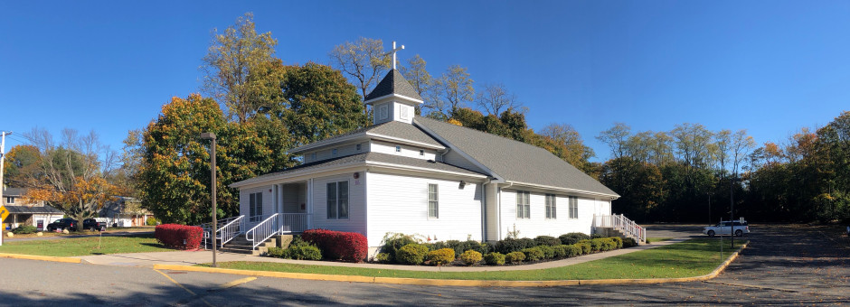
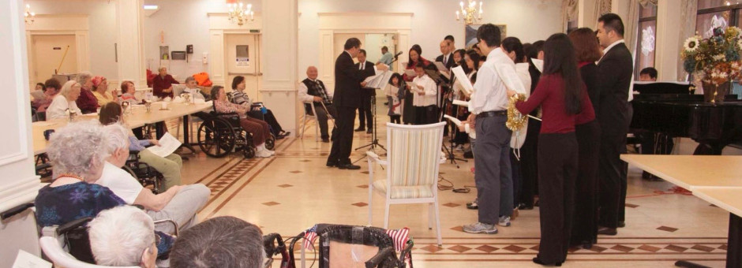
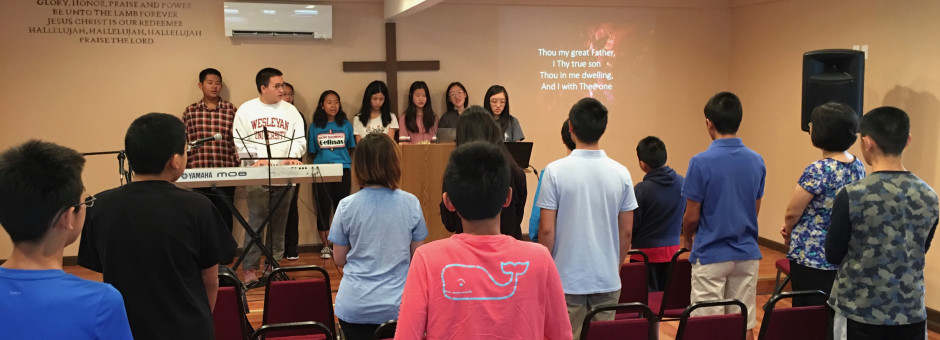
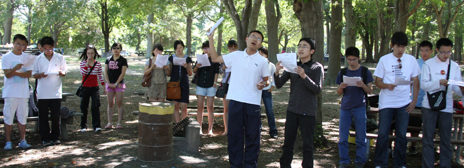
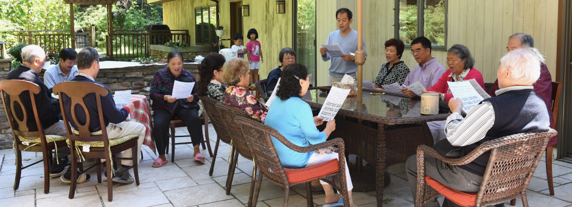
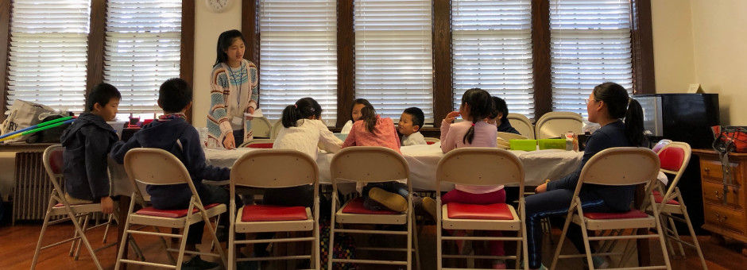
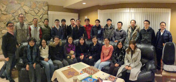

18 Moriches Rd, Lake Grove, NY 11755
主日崇拜 Sunday Worship：10:00 am － 12:30 pm
耶稣说：『我就是道路、真理、生命，若不藉着我，没有人能到父那里去』— 约翰福音14：6
Home
关于我们 About Us
信仰根基 Confession of Faith
认信的信仰宣言 Historic Creeds
异象宗旨 Our Vision
教会事工 Ministries
聚会时间
信息录音 Messages
讲道录音 Sermon Recordings
主日学录音 Sunday School
特会信息 Special Gathering
受浸班录音 Baptism Class
寻牧启事 Pastoral Search
中文堂寻牧启事
Youth Pastoral Search
联系我们 Contact Us






每周金句

校园团契
真理追求
Latest Sermon: 属灵成长的第三步 – 追求与神联合 – 黄克斌 - November 10, 2024
Download Latest Sermon
Upcoming Events
View All
Nov 15, 2024 - 2024 康来昌牧师特会: 信耶稣的意义
7:30 pm
View More
News & Announcements
Read All
2024 康来昌牧师特会: 信耶稣的意义
posted on October 13, 2024
Read More
2023/8/20 户外敬拜聚会
posted on August 14, 2023
Read More
2022/09/02 Stony Brook 开学迎新活动！
posted on August 22, 2022
Read More
因Moriches Road封路，2022年8月21日主日仅有线上聚会。Lake Grove Road Closure and Online Service Only on 2022/8/21
posted on August 15, 2022
Read More